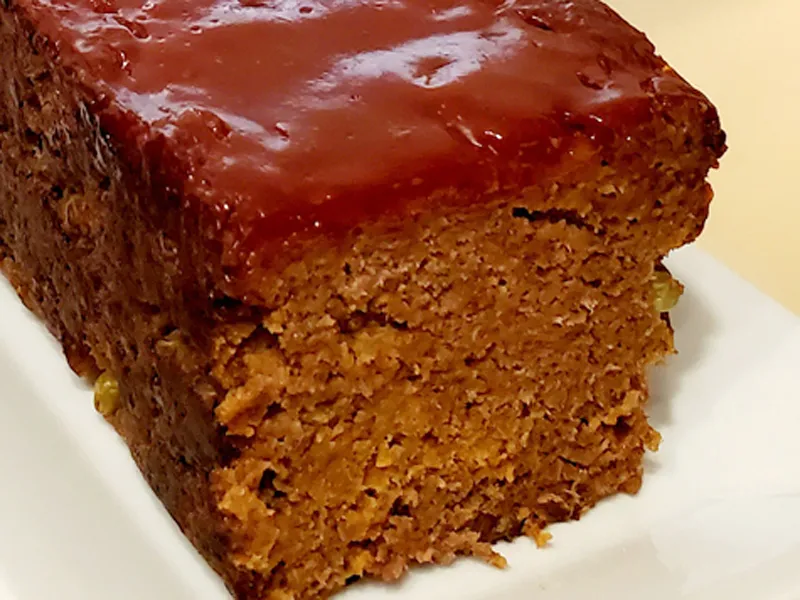

My Meatloaf
Prep Time:
15 minutes
Cook Time:
40 minutes
Servings:
6
Calories per Serving:
423
Protein:
44g
Carbs:
15g
Fat:
20g
Fiber:
1.3g

Ground beef (lean),
breadcrumbs,
yellow onion,
garlic,
frozen peas,
egg,
milk,
spices (mustard powder, cumin, paprika, coriander, sage, black pepper),
ketchup,
worcestershire sauce,
malt vinegar,
kosher salt
loaf pan
large bowl
small bowl
medium skillet
beef
one pan
set/forget
breezy
fallback
Amber-approved